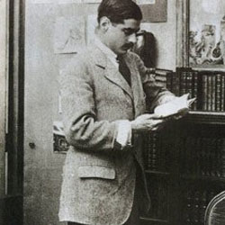

Arthur Boy Capel
|  | In 1908 Chanel began an affair with one of Balsan's friends, Captain Arthur "Boy" Capel. He was a wealthy member of the English upper class. Fascinated by Chanel's work, he installed her in an apartment in Paris and financed Chanel's first shops.Thanks to him and to his money, she became a hat maker in 1910 and opened a boutique at 21 rue Cambon in Paris named Chanel Modes. It is said that Capel's own sartorial style influenced the conception of the Chanel look. |
|
The couple spent time together at fashionable places such as Deauville, but he was never faithful to Chanel. The affair lasted nine years, but even after Capel married an English aristocrat, he did not completely break off with Chanel. His death in a car accident, in late 1919, was the single most devastating event in Chanel's life. Twenty-five years after the event, Chanel then residing in Switzerland, confided to her friend Paul Morand: "His death was a terrible blow to me. In losing Capel, I lost everything. What followed was not a life of happiness, I have to say." |
 |